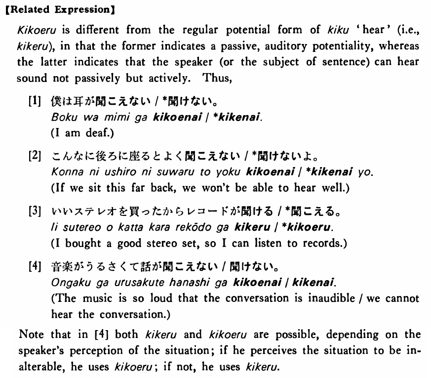

聞こえる・きこえる (B. 188)
- (ks).
- 私（に）は鶯の声がよく聞こえる・聞こえます。
- To me the cries of a nightingale are clearly audible. / I can clearly hear the cries of a nightingale.
- (a).
- その音は小さ過ぎて聞こえない。
- That sound is too weak and is not audible.
- (b).
- 大山さんの声は大きいので隣の部屋の人にもよく聞こえる。
- Mr. Oyama's voice is so loud that people in the neighbouring rooms can hear him.
- (c).
- 私にはお寺の鐘の音が聞こえたが、弟には聞こえなかった。
- I could hear the sound of the temple bell, but my younger brother couldn't.
- (d).
- テーラーさんの作った文は変に聞こえる。
- The sentences which Mr. Taylor made sound strange.
